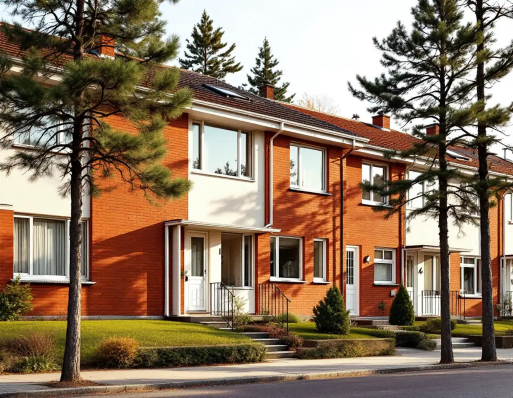
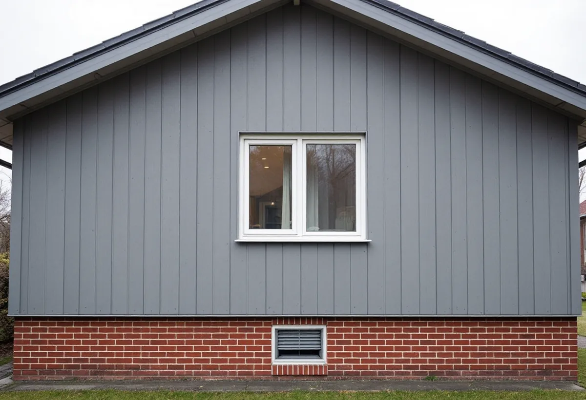

Platsbesök
Vi går igenom tegel, puts och skivor och noterar vilka delar av väggen som är skadade.

Tegelfasaden på ett hus i Vällingby behöver sällan mer än översyn, men allt runt den åldras: plåtar, anslutningar och de skivor som ofta sitter bredvid.
Beskriv jobbet kort.
Något blev fel. Kontrollera uppgifterna eller ring 08 12 410 276.
Vi tittar på jobbet på plats innan du får offert.
Du ser vad som ingår och vad det kostar.
Vi drar av ROT direkt och sköter ansökan.
Geal Entreprenad AB, Bromma. Org.nr 559303-7566.
Geal Entreprenad AB renoverar fasader i Vällingby på radhus, kedjehus och flerbostadshus och väljer åtgärd efter materialet på just den delen av väggen.
Stadens vägledning för småhusområden beskriver tunnelbanestäderna som en blandning av för tiden mycket moderna idéer och det mer traditionella folkhemsidealet. Fasader i rött tegel var vanligt, men det förekom även puts och skivor i fibercement. Byggnadstekniken blev alltmer industrialiserad men gav ändå stort utrymme för terränganpassning. Utformning och materialval varierar mellan områdena, och vägledningen nämner tidstypisk färgsättning bland karaktärsdragen.
I översiktsplanens beskrivning av riksintresset Vällingby räknas de ursprungliga husens gestaltning och byggnadsdetaljer som fönster, entrépartier, balkonger och räcken till de värdebärande karaktärsdragen, liksom centrumanläggningarnas omsorg om form-, färg- och materialverkan. En fasadrenovering här handlar alltså lika mycket om att behålla materialens samspel som om att laga det som är skadat. Stadens områdesfakta 2025 räknar 449 bostäder i småhus i stadsdelen Vällingby, varav 228 bostadsrätter och 220 äganderätter, och 3 891 bostäder i flerbostadshus och övriga hus.

Stockholms läns museum beskriver tegel som ett keramiskt naturmaterial av lera som bränns i mycket hög temperatur och som i stort sett kan beskrivas som underhållsfritt. Är fasaden rätt skyddad mot snö och regn, genom tillräckliga taksprång, kan den enligt museet hålla i evighet. Lera rik på järnoxid ger rött tegel, kalkrik lera gult. Teglet muras i förband så att muren hålls samman, med liggfogar horisontellt och stötfogar vertikalt. Museet påpekar också att mexitegel inte är tegel utan en blandning av kalk, sand och krossad sandsten.
Det som slits på en tegelfasad är därför sällan stenen. Boverket påminner om att alla fasader har anslutnings- och infästningsdetaljer – stuprörens infästningar, anslutningar mot fönster och dörrar – och att de kräver tätning i mer än en nivå när de utsätts för slagregn. Fuktskador kan också uppstå om fasadens ytskikt fuktas upp och inte hinner torka ut tillräckligt fort. Vid en fasadrenovering i Vällingby går vi därför igenom fogarna, fönsterblecken, plåtarna vid takfoten och övergångarna mellan tegel, puts och skivor innan vi föreslår något.
Boverket skriver att många fasader under 1940- och 1950-talen kläddes med cementfiberplattor som innehöll asbestfibrer. Plattorna är nästan underhållsfria så länge de inte skadas, men fibrerna kan frigöras vid bearbetning, till exempel när man borrar i dem. Ska sådana skivor rivas krävs enligt Arbetsmiljöverket tillstånd för företaget som utför arbetet, och förarbetet på platsen, omhändertagandet av avfallet och städningen efteråt räknas också som rivning och sanering. Tillståndet ska sökas åtta veckor innan arbetet påbörjas.
Byte av material eller kulör på fasaden räknar Stockholms stad som fasadändring, och tilläggsisolering likaså. För ett en- eller tvåbostadshus krävs i regel inte längre lov, men inom ett riksintresse för kulturmiljövården – som visas med blå ring i Stadsmuseets klassificeringskarta – krävs bygglov även för åtgärder som annars är lovfria. Vällingby–Råcksta är utpekat som ett sådant riksintresse. Om ommålning av puts, se fasadmålning i Vällingby, och om plåt vid takfot och fönster plåtslagare i Vällingby.
Vi går igenom tegel, puts och skivor och noterar vilka delar av väggen som är skadade.
Misstänkta asbestskivor provtas innan något bearbetas.
Vi kontrollerar Stadsmuseets karta och om åtgärden kräver lov i riksintresset.
Fogning, plåt, puts och skivor redovisas var för sig.
Fogar och anslutningar görs om, och skadade skivor ersätts med material som behåller uttrycket.
Plåt och bleck monteras, ställningen tas ner och vi går igenom fasaden tillsammans.
Äger du radhuset eller villan räknar Skatteverket att byta, mura, reparera och måla fasader som rotarbete, och att sanera asbest i samband med byggarbete. Avdraget är högst 30 procent av arbetskostnaden, som mest 50 000 kr per person och år och 75 000 kr tillsammans med rutavdrag. Material och resor ger inget avdrag, och vi drar avdraget direkt på fakturan.
Är radhuset en bostadsrätt hör fasaden till de gemensamma ytorna, och då ger fasadarbetet inget rotavdrag. Att mäta asbest ger inte heller avdrag, varken i småhus eller bostadsrätt.
Fasadens yta, hur många fogar och anslutningar som behöver göras om, om asbesthaltiga skivor ska saneras, vilket ersättningsmaterial som väljs och om åtgärden kräver lov påverkar kostnaden. Efter ett gratis platsbesök får du ett skriftligt kostnadsförslag.
Puts, panel och tilläggsisolering.
Fasadrenovering i Stockholm →Takbyte, takbesiktning och plåtarbeten.
Takläggare i Vällingby →Radhusen i riksintresset Vällingby–Råcksta.
Takrenovering i Vällingby →Riksintresset och villaområdena.
Attefallshus i Vällingby →Riksintresset, radhusen och våtzonerna.
Badrumsrenovering i Vällingby →Bygga till i riksintresset.
Byggföretag i Vällingby →Puts från 1950-talet och kulör i riksintresset.
Fasadmålning i Vällingby →Radhus och kedjehus i riksintresset.
Fönsterbyte i Vällingby →Radhusens fönster.
Fönsterrenovering i Vällingby →Gamla mattor, lim och asbest.
Golvläggare i Vällingby →Lamellgolv, svikt och slitskikt.
Golvslipning i Vällingby →Kök i lägenheter och radhus.
Köksrenovering i Vällingby →Radhus och lägenheter i ABC-staden.
Målare i Vällingby →Takplåt, rännor och beslag i riksintresset.
Plåtslagare i Vällingby →Entréer, dörrar och räcken på radhusen.
Snickare i Vällingby →Kälvesta och husgrupperna.
Takbyte i Vällingby →Väggar från 1950-talet.
Tapetsering i Vällingby →Radhusen, riksintresset och lovet.
Tillbyggnad i Vällingby →ABC-staden, eternit och föreningen.
Totalrenovering i Vällingby →Eller ring 08 12 410 276, mån–fre 08–17.
Beskriv jobbet kort.
Något blev fel. Kontrollera uppgifterna eller ring 08 12 410 276.